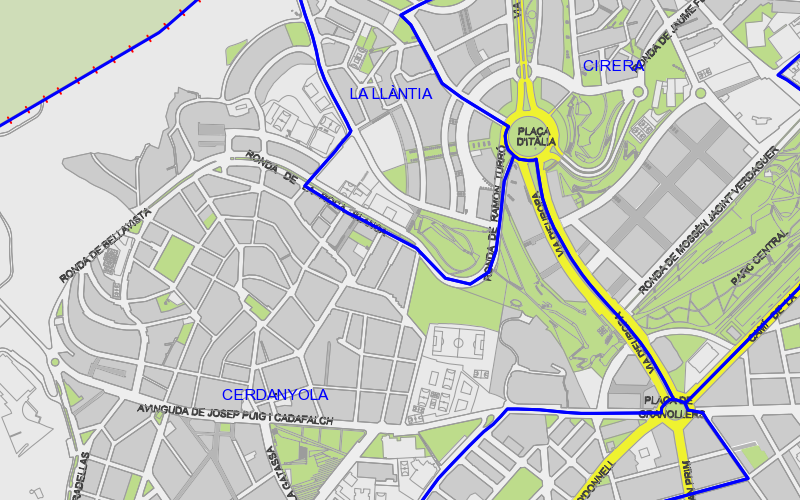
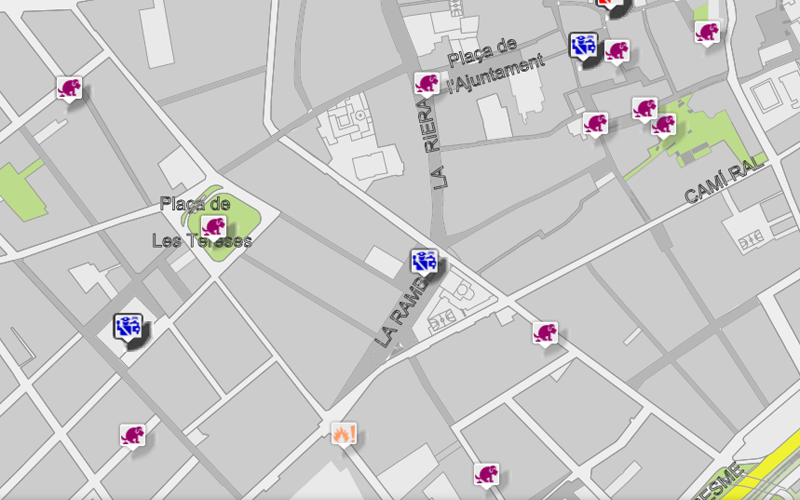
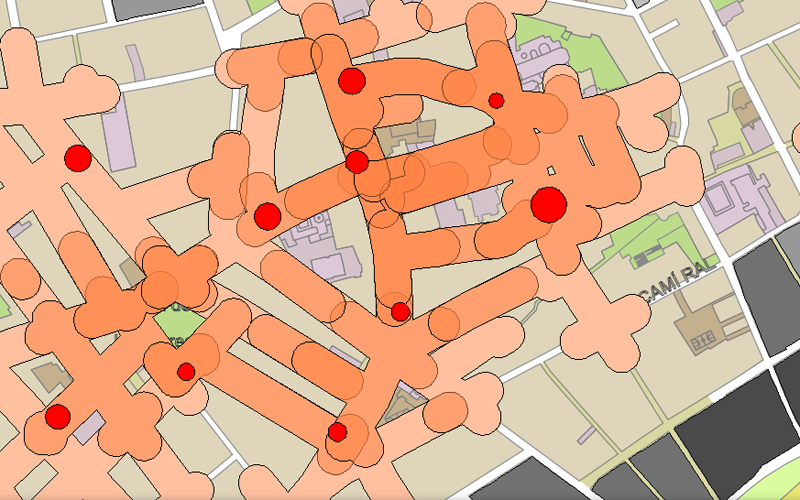
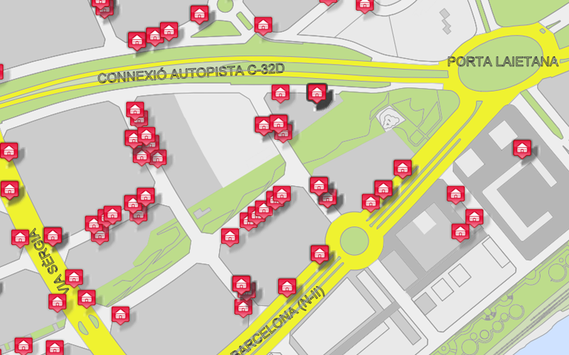
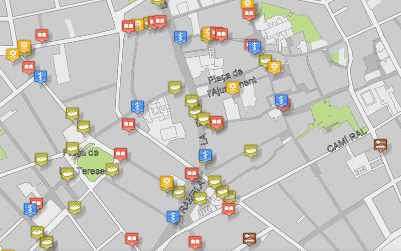

Mapes temàtics

Límits administratius
Límit de barris, límit dels veïnats de Mataró, districtes postals i Àrees bàsiques de salut.



Activitat Policial
Control de trànsit, vehicles abandonats, incendis, delictes,.....


Polígons Industrial
Límit del polígon, Inventari empreses, activitats econòmiques,...

Activitats Comercials
Activitats econòmiques, Comerç al detall, Hosteleria,...